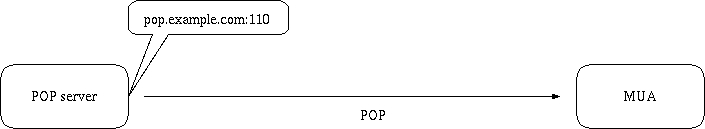
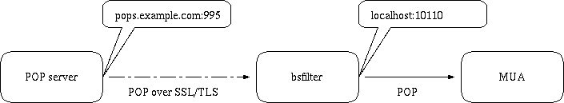

$Id: index.html,v 1.41 2013/11/03 08:40:41 nabeken Exp $
bsfilter / bayesian spam filter / ベイジアン スパム フィルタ
japanses
english


0. bsfilterとは
2.1. UNIX系の場合
rubyインタープリタをインストールし、アーカイブの中のbsfilter/bsfilterをPATHが通っている適当なディレクトリに置く。
OS、ディストリビューションによっては、ports、ebuild等のパッケージが用意されている場合もある。
3.1. 単語(token)のspam確率から判定する
あらかじめtokenごとのspam確率を求めておき、メールの中にspam確率の高いtokenが多く含まれていたら、
そのメールがspamであると判定する。

3.2. 準備が必要
実際に使用を開始する前に、spam確率を求めるという準備が必要である。
判定済のメール内のtoken出現回数を求め、spam / (clean + spam)により確率を求める。
--add-clean, --add-spam, --updateというコマンドで準備を行う。

準備
実際に判定する前に、データベースを準備する必要がある。
1. cleanなメール中の単語を数える。
% bsfilter --add-clean ~/Mail/inbox/*
2. spam中の単語を数える。
% bsfilter --add-spam ~/Mail/spam/*
3. 単語ごとにclean/spamな確率を求める。
% bsfilter --update
以上で、準備終了。
判定
コマンドライン引数で判定対象のメールを指定する例。0から1の範囲で、spam確率が表示される。
% bsfilter ~/Mail/inbox/1
combined probability /home/nabeken/Mail/inbox/1 1 0.012701
標準入力から判定対象のメールを入力する例。spamの場合、exit statusが0になる。
~% bsfilter < ~/Mail/inbox/1 ; echo $status
1
~% bsfilter < ~/Mail/spam/1 ; echo $status
0
~/.procmailrcから呼ぶときのサンプルレシピその1。
exit statusを利用して、spamをspamフォルダに移動する。
:0 HB:
* ? bsfilter -a
spam/.
~/.procmailrcから呼ぶときのサンプルレシピその2。spamに
X-Spam-Flag:、X-Spam-Probability:ヘッダを追加し、
X-Spam-Probabilityの示す確率に従い、blackフォルダ、grayフォルダに移動する。
:0 fw
| /home/nabeken/bin/bsfilter --pipe --insert-flag --insert-probability
:0
* ^X-Spam-Probability: *(1|0\.[89])
black/.
:0
* ^X-Spam-Probability: *0\.[67]
gray/.
bsfilterフォーラムへどうぞ。
コマンドラインの形式
以下の2通りの形式がある。
- bsfilter [options] [commands] < MAIL
- bsfilter [options] [commands] MAIL ...
maintenance modeとfiltering modeがある。
- commandsが指定されているときは、maintenance modeで動作し、データベースの更新を行なうが、spamの判定は行わない。
- commandsが指定されていないときは、filtering modeで動作し、spamの判定を行なうが、データベースの更新は行わない。
- filtering modeで--(synchronous-)auto-updateが指定されているときは例外で、spamの判定、データベースの更新、両方を行う。
標準入力からメールを与え、spamかどうか判定させるには、filtering modeで1の形式を使用する。
spamの場合は、exit statusが0になる。
~/.procmailrcから呼び出す場合は、通常、この形式になる。
コマンドライン引数でメールのファイルネームを与え、spamかどうか判定させる際には、filtering modeで2の形式を使用する。
複数のメールを同時に判定することが出来る。結果は標準出力に表示される。
コマンド一覧
- --add-clean
- -c
- cleanなメール中のtokenをデータベースに足す。
- --add-spam
- -s
- spam中のtokenをデータベースに足す。
- --sub-clean
- -C
- cleanなメール中のtokenをデータベースから引く。
- --sub-spam
- -S
- spam中のtokenをデータベースから引く。
- --update
- -u
- tokenごとのclean/spam確率が入っているデータベースを更新する。-c、-s等と同時に使われた場合は、メール中のtokenについてのみ、確率データベースを更新する。
- --export-clean
- cleanなtokenをデータベースから独自フォーマットのテキストにエクスポートする。
- --export-spam
- spamなtokenをデータベースから独自フォーマットのテキストにエクスポートする。
- --import-clean
- cleanなtokenをデータベースへ独自フォーマットのテキストからインポートする。
- --import-spam
- spamなtokenをデータベースへ独自フォーマットのテキストからインポートする。
- --export-probability
- 確率データベースをエクスポートする。デバッグ用の機能であり、インポートは出来ない。
複数のコマンドを同時に指定できる。
オプション一覧
- --homedir directory
- データベース、ロックファイルを作るホームディレクトリを指定する。
--homedirオプションが使用されなかった場合は、
BSFILTERHOME環境変数で設定されたディレクトリを使用する。
BSFILTERHOME環境変数が設定されていない場合は、
~/.bsfilterを使用する。
HOME環境変数が設定されていない場合は、bsfilterのあるディレクトリを使用する。
- --config-file filename
- 設定ファイルを指定する。デフォルトでは、上記bsfilterホームディレクトリの
bsfilter.confが使用される。
## example of bsfilter.conf
jtokenizer MeCab
spam-cutoff 0.6
- --max-line number
- 先頭から指定した行数の範囲を、判定、学習の対象にする。
- --db sdbm|gdbm|bdb1|bdb|qdbm
- データベースの形式を指定する。デフォルトはsdbm。bdb, qdbmのサポートは1.0.8から。
- --jtokenizer bigram|block|mecab|chasen|kakasi
- -j bigram|block|mecab|chasen|kakasi
- 日本語のメールからtokenを切り出す際のアルゴリズムを指定する。
bigram(連続する漢字2文字で1token)、
block(連続する漢字全部で1token)、
MeCab(和布蕪)、
ChaSen、
KAKASIを呼び出す方法をサポートしている。
デフォルトはbigram。MeCab, ChaSen, KAKASIを使用するには、
あらかじめrubyバインディングをインストールしておく必要がある。
- --method g|r|rf
- -m g|r|rf
- Paul Graham提案の方式に准ずるか(g)、
Gary Robinson提案の方式に准ずるか(r)、
Gary Robinson-Fisher方式に准ずるか(rf)を指定する。
デフォルトはGary Robinson-Fisher方式。
- --spam-cutoff number
- spamの確率がいくつ以上だったら、spamと判定するかを指定する。
デフォルトは、Paul Graham方式で0.9、Gary Robinson方式で0.582、Robinson-Fisher方式で0.95。
- --auto-update
- -a
- メールがcleanかspamか判定し、その結果に基づいてメール中のtokenをデータベースに足し、
確率データベースも更新する。
- --disable-degeneration
- -D
- 確率データベースを引く際の還元を抑止する。
- --disable-utf-8
- utf-8サポートを抑止する。
- --refer-header header[,header...]
- 参照するヘッダを指定する。複数指定する場合は、スペースを入れずにコンマで区切り羅列する。デフォルトは
"Ufrom,From,To,Cc,Subject,Reply-to,Return-path,Received,Content-Transfer-Encoding,Content-Type,charset,Content-Disposition"
を指定したのと同じ。
- --ignore-header
- -H
- メールヘッダを無視する。--refer-header ""を指定したのと同じ。
- --ignore-body
- -B
- URL、メールアドレス以外のメール本文を無視する。
- --ignore-plain-text-part
- htmlのパートがある場合、plain textのパートを無視する。
- --ignore-after-last-atag
- 最後のA end tag以降を無視する。
- --mark-in-token "characters"
- token中に現れてもよい(== tokenの区切りにならない)記号を指定する。
デフォルトでは、"*'!"が設定されている。
- --show-new-token
- 新たにデータベースに追加されたtokenを表示する。
- --show-process
- 動作の様子を表示する。
左のカラムから、プロトコル、言語、判定結果、学習コマンド、日時、message-idを意味する。
- --show-db-status
- データベースの状況を表示して終了する。
左のカラムから"db"(固定)、言語、clean tokenの数、clean mailの数、spam tokenの数、spam mailの数、確率データベース内のtoken数を意味する。
- --mbox
- mbox形式をサポート。ひとつのファイルを、"unix from"で区切られた複数のメールとして扱う。
- --max-mail number
- token database中のメールの数がこの値を越えたら、token databaseを縮小する。デフォルトは10000。
- --min-mail number
- token database中のtoken登場回数に、(min-mailで指定した数/max-mailで指定した数)を掛けることにより、token databaseの縮小を行う。
デフォルトは8000。
- --pipe
- メールをstdoutに出力する。
- --insert-flag
- stdoutに出力するメールのヘッダに"X-Spam-Flag: Yes"か"X-Spam-Flag: No"を追加する。
filtering modeの際には判定結果に基づき、maintenance modeの際にはコマンドに基づき、追加する。
- --insert-probability
- stdoutに出力するメールのヘッダに、"X-Spam-Probability: number"を追加する。filtering modeでのみ有効。
- --insert-revision
- stdoutに出力するメールのヘッダに、"X-Spam-Revision: bsfilter..."を追加する。filtering modeでのみ有効。
- --header-prefix string
- メールのヘッダに、"X-Spam-..."ではなく、"X-指定した文字列-..."を追加する。
- --mark-spam-subject
- spamの場合、メールのSubjectヘッダに"[SPAM] "を挿入する。
- --spam-subject-prefix string
- メールのSubjectヘッダに"[SPAM] "ではなく、指定した文字列を挿入する。
- --list-clean
- cleanと判定されたファイルネームを表示する。判定対象のメールをコマンドライン引数で与えた場合のみ有効。
- --list-spam
- spamと判定されたファイルネームを表示する。判定対象のメールをコマンドライン引数で与えた場合のみ有効。
- --help
- -h
- ヘルプを表示する。
- --revision
- リビジョンを表示する。
- --verbose
- -v
- メッセージを多めに表示する。
- --debug
- -d
- デバッグ用のメッセージを表示する。
IMAPでサーバと通信し、サーバに保存しているメールを学習、判定することができる。
判定結果に従い、ヘッダを挿入すること、指定したフォルダにメールを移動するすることが可能である。

IMAPに関するオプション
- --imap
- IMAPを使用する場合に指定する。必須。
- --imap-server hostname
- IMAPサーバを指定する。必須。
- --imap-port number
- IMAPサーバが使用しているポート番号を指定する。デフォルトは143。
- --imap-auth cram-md5|login|loginc|auto
- 認証方法を指定する。
cram-md5(AUTHENTICATE CRAM-MD5命令)、
login(AUTHENTICATE LOGIN命令)、
loginc(LOGIN命令)、
auto(cram-md5、login、logincの順で適当な方法を選択)が指定可能。デフォルトはauto。
- --imap-user user_name
- IMAPサーバでのユーザネームを指定する。必須。
- --imap-password password
- IMAPサーバのpasswordを指定する。必須。
- --imap-folder-clean folder_name
- cleanとして学習したメール、cleanとして判定されたメールを移動する先のフォルダを指定する。
- --imap-folder-spam folder_name
- spamとして学習したメール、spamとして判定されたメールを移動する先のフォルダを指定する。
- --imap-fetch-unseen
- SEENフラグが付いていないメールのみを学習、判定の対象とするとき使用する。
- --imap-fetch-unflagged
- X-Spam-Flagヘッダが付いていないメールのみを学習、判定の対象とするとき使用する。
- --imap-reset-seen-flag
- bsfilterがヘッダを挿入したメール、別のフォルダに移動したメールのSEENフラグをリセットする。
- --ssl
- --imap-serverで指定したサーバとの間でIMAP over SSLを使用する。
- --ssl-cert filename|dirname
- IMAP over SSLの際に使用する証明書を指定する。
--imapを使用している場合に無効なオプション
--pipeは無効である。
使用例
bsfilter.confの例
imap-server imap.example.com
imap-auth login
imap-user hanako
imap-password open_sesame
inboxの中のX-Spam-Flagがついていないメールを判定し、判定結果をヘッダに入れ、spamの場合はinbox.spamに移動する例
% bsfilter --imap --imap-fetch-unflagged --insert-flag --insert-probability --imap-folder-spam inbox.spam inbox
POP proxyとして動作し、MUAがサーバからPOPで受信する経路の途中で、メールを判定しヘッダを挿入することが可能である。--auto-updateによる自動学習は行えるが、--add-clean、--add-spamによる学習は行えない。
pop.example.comのポート110でPOPサーバが動いているとする。

bsfilterがPOP proxyとして動作する。サーバとbsfilter間、bsfilterとMUA間はPOPを使用する。bsfilter内部で、メールを判定しヘッダを挿入する。この場合は、以下のようオプションを設定する(--pop-portのデフォルトは110、--pop-poryx-portのデフォルトは10110なので、省略可能)。
% bsfilter --pop --auto-update --insert-flag --insert-probability --pop-server pop.example.com --pop-port 110 --pop-proxy-port 10110

pops.exmaple.comがPOP over SSLを使用している場合は、サーバとbsfilter間はPOP over SSL、bsfilterとMUA間はPOPを使用する。
% bsfilter --ssl --pop --auto-update --insert-flag --insert-probability --pop-server pops.example.com --pop-port 995 --pop-proxy-port 10110

POPに関するオプション
- --pop
- POP proxyとして動作させる場合に指定する。必須。
- --tasktray
- windowsでVisualuRuby使用時、タスクトレイに常駐させる。
- --pop-server hostname
- POPサーバを指定する。
- --pop-port number
- POPサーバが使用しているポート番号を指定する。デフォルトは110。
- --pop-proxy-if address
- bsfilterがメイラからのリクエストを受け取るインターフェイスのアドレスを指定する。
デフォルトは0.0.0.0で全てのインターフェイスから受け取る。
- --pop-proxy-port number
- bsfilterがメイラからのリクエストを受け取るポート番号を指定する。デフォルトは10110。
- --pop-user name
- 特定のユーザのみ使用を許可する場合に使用する。POPサーバでのユーザネームを指定する。
- --pop-proxy-set set[,set...]
-
POP proxyのルールを記述する。複数記述できる。--pop-server, --pop-port, --pop-proxy-port, --pop-userオプションの代りに使用する。
ルールのフォーマットは"pop-server:[pop-port]:[proxy-interface]:proxy-port[:pop-user]"
- pop-server
- POPサーバを指定する。
- pop-port
- POPサーバが使用しているポート番号を指定する。省略時は110。
- proxy-interface
- bsfilterがメイラからのリクエストを受け取るインターフェイスを指定する。省略時は全てのインターフェイスから受け取る。
- proxy-port
- bsfilterがメイラからのリクエストを受け取るポート番号を指定する。
- pop-user
- 特定のユーザのみ使用を許可する場合に使用する。POPサーバでのユーザネームを指定する。
- --pop-max-size number
- 指定したバイト数以上のメールについては処理をバイパスし、判定、学習の対象にしない。
0を指定すると、全てのファイルを判定、学習の対象にする。デフォルトは50000(50Kbytes)。
- --pid-file filename
- Process IDを記録するファイルネームを指定する。デフォルトは、bsfilterホームディレクトリのbsfilter.pid。
- --ssl
- --pop-serverで指定したサーバとの間でPOP over SSLを使用する。
- --ssl-cert filename|dirname
- POP over SSLの際に使用する証明書を指定する。
--popを使用している場合に無効なオプション
--pipe、及び、--add-clean等、学習に関するコマンド、オプションは無効である。
Q. IMAP over SSLの際に証明書を指定すると異常終了する
ruby標準ライブラリのnet/imap.rbの問題。ruby-1.8.3以降なら問題ないはず
Q. in `get_all_responses': Mailbox does not exist, or must be subscribed to. (Net::IMAP::NoResponseError)というエラーで落ちるのだけど
メールボックスの名前が間違っていると思われる。ruby-1.8のimap.rbで以下のようにして調べるとよい。
% ruby /usr/local/lib/ruby/1.8/net/imap.rb --user=taro --auth=login imap.example.com
password: ******
taro@imap.example.com> list
INBOX.junk
INBOX
Q. windowsで使いたいのだけど?
mswin32版、cygwin版等、既にRubyがインストール済みの場合は、bsfilterのソースを普通に実行すればよい。
Q. exit statusはどのようになっている?
通常は0。--pipeオプションなしで判定対象メールを標準入力から与えた場合のみ、判定結果をexit statusから得ることが出来る。
その場合、spamは0、cleanは1というexit statusになる。
Q. No such file to load -- sdbmというエラーが出る。
sdbmを使用可能にする。例えばdebianの場合は、libsdbm-rubyをインストールする。
Q. mewと一緒に使うには?
bsfilter with mewを参照。
Q. Wanderlustから使うには?
やまだあきらさんがwl-bsfilter.elを公開中。
\ay diary、
Re: Mark & Action (Re: 2種類の削除コマンド)から。
Q. 日本語の取り扱いは?
メールが日本語か否かをad hocに判断し、日本語らしき場合はnkf.soでEUC
に変換している。Subjectや本文でISO-2022-JPと名乗りつつ、実際のコードは
shift jisというケースも、nkfが救ってくれている模様。iconvが使えれば、unicodeもサポート。
各種データベースは、日本語用とその他用に分けてある。
デフォルトでは連続する漢字2文字(bigram)、カタカナをtokenとして扱っている。
MeCab(和布蕪)による形態素解析を行うには、MeCabとrubyバインディングをインストールし、
--jtokenizer MeCabを指定すればよい。ChaSen, KAKASIについても同様。
Q. -aオプションを使用したら、cleanなメールをspamと誤判定された。誤判定に基づき更新されたデータベースに対する対処は?
誤判定されたメールが~/Mail/spam/123であるなら、
% bsfilter --sub-spam --add-clean --update ~/Mail/spam/123
とする。~/Mail/spam/123をspam token databaseから削除し、
clean token databaseに追加し、確率データベースを更新する。
Q. 過去に受け取ったspamを保存していないので、spam token databaseが作れない。どうればよい?
TLEC presents spamassassin を fetchmail から利用する方法
で紹介されている、
Linux-usersメイリングリストのspamをかき集めたものを利用するのが便利。
FreeBSD ports-jp MLの以下のアーカイブはspamのみ。
Q. Paul Graham方式、Gary Robinson方式、Gary Robinson-Fisher方式を切り替えるには?
Paul Graham方式と、Gary Robinson、Gary Robinson-Fisher方式との間で切り替えるには、
-uでspam確率データベースを更新するところからやり直す。spam確率データベースを更新するとき(maintenance mode)と、
メールをspamか判定させるとき(filtering mode)とで、同じ方式を-mオプションで指定する必要がある。
Gary Robinson方式と、Gary Robinson-Fisher方式の間で切り替えるときには、-uは不要である。
-c、-sでtokenを数えるところは方式に依存していないので、どの場合もやり直す必要はない。
Q. Paul Graham方式とGary Robinson方式の違いは?
tokenごとのspam確率を求める方法、それを使用してメールのspam確率を求める方法、両方とも異なる。
Paul Graham方式でのtokenごとのspam確率をpg(w)とする。pg(w)を求める際の特徴を挙げる。
- cleanな方向にバイアスをかけるために、cleanなメール中での実際のtoken出現回数を2倍してから、計算する。
- 過去に出会ったことのないtokenのpg(w)は、0.4とする。
Gary Robinson方式でのtokenごとのspam確率をf(w)とする。以下のように求める。
Paul Graham方式では、特徴的な(0.5より遠い)pg(w)を持つ15のtokenを使用してcombining probabilityを求め、
それをメールのspam確率としている。
Gary Robinson方式では、以下で求めたSをメールのspam確率とする(bsfilterが表示するのはS2)。
P = 1 - ((1 - f(w1)) * (1 - f(w2)) * ... * (1 - f(wn))) ^ (1 / n)
Q = 1 - (f(w1) * f(w2) * ... * f(wn)) ^ (1 / n)
S = (P - Q) / (P + Q)
S2 = (1 + S) / 2
Q. Gary Robinson方式とGary Robinson-Fisher方式の違いは?
f(w)を求めるところまでは同じ。それ以降、Robinson-Fisher方式では以下のように計算する。
P = ((1 - f(w1)) * (1 - f(w2)) * ... * (1 - f(wn))) ^ (1 / n)
Q = (f(w1) * f(w2) * ... * f(wn)) ^ (1 / n)
P' = 1 - chi-square(-2 * log(P), 2 * n)
Q' = 1 - chi-square(-2 * log(Q), 2 * n)
S = (1 + P' - Q') / 2
コマンドライン引数で、mbox形式のファイルを指定することも可能であるが、
Content-lengthヘッダを見る機能がない。そのため、Solarisのように
本文中の"From"がエスケープされないシステムでは、本文中の"From"を
UnixFromと見誤ることが考えられる。
bsfilterが表示するメールの番号と、MUAでの番号が食い違う障害が発生すると思われる。
コードが汚い。
bsfilterという名前が安直。
筆者の日記の
bsfilterカテゴリで代用。
- bsfilterについて
- spamについて
- spam対策ツールについて
- 開発に使用しているツールについて